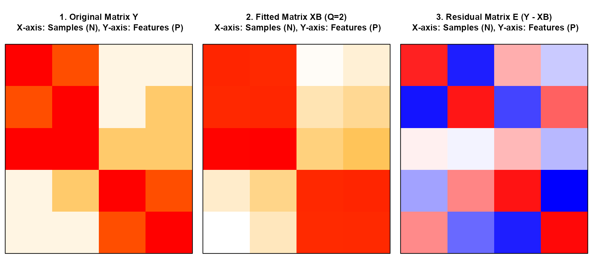

Introduction
Welcome to the nmfkc package! This vignette provides a
beginner-friendly introduction to the core function,
nmfkc().
Non-negative Matrix Factorization (NMF) is a technique that decomposes a large data matrix into two smaller matrices, and : The key feature of NMF is that all elements must be non-negative (). This makes the results intuitive, as the original data can be understood as an additive combination of parts.
In this guide, we will cover:
- Basic NMF: Extracting latent topics using a Movie Ratings example.
- Interpretation: Understanding what the decomposed matrices represent.
- Missing Values: How to handle and predict missing data (e.g., for recommendations).
1. Basic Usage: Analyzing Movie Ratings
To understand NMF, let’s imagine a scenario with 5 Users rating 4 Movies on a scale of 1 to 5.
First, load the package.
library(nmfkc)
#> Package: nmfkc (Version 0.5.6 , released on 25 11 2025 )
#> https://ksatohds.github.io/nmfkc/Creating the Data
We create a rating matrix Y. The dataset contains two
hidden genres: “Action” (Movies 1 & 2) and “Romance” (Movies 3 &
4).
# Rows: Users (U1-U5), Cols: Movies (M1-M4)
# U1, U2, U3 prefer Action movies.
# U4, U5 prefer Romance movies.
Y <- matrix(
c(5, 4, 1, 1,
4, 5, 1, 2,
5, 5, 2, 2,
1, 2, 5, 4,
1, 1, 4, 5),
nrow = 5, byrow = TRUE
)
# Assign names for better interpretation
rownames(Y) <- paste0("User", 1:5)
colnames(Y) <- c("Action1", "Action2", "Romance1", "Romance2")
# Check the data
print(Y)
#> Action1 Action2 Romance1 Romance2
#> User1 5 4 1 1
#> User2 4 5 1 2
#> User3 5 5 2 2
#> User4 1 2 5 4
#> User5 1 1 4 5Running NMF
We use the nmfkc() function to decompose this matrix.
Since we assume there are 2 genres (Action and Romance), we set
rank = 2.
# Run NMF with rank = 2
res <- nmfkc(Y, rank = 2, seed = 123)
#> Y(5,4)~X(5,2)B(2,4)...0secInterpretation
NMF decomposes into (Basis) and (Coefficient). (Note: The order of bases may vary depending on the random seed. In this example with seed=123, Basis 1 corresponds to Action and Basis 2 to Romance.)
1. Basis Matrix X: User Preferences
The matrix represents “How much each User likes each Genre (Basis).”
# Each column represents a latent factor (Basis)
res$X
#> Basis1 Basis2
#> User1 0.313397420 0.03671376
#> User2 0.304765794 0.08552167
#> User3 0.333724154 0.12109379
#> User4 0.039553910 0.37804885
#> User5 0.008558722 0.37862193- Basis1: High values for User1, User2, and User3 (Action fans).
- Basis2: High values for User4 and User5 (Romance fans).
2. Coefficient Matrix B: Movie Genres
The matrix represents “Which Genre each Movie belongs to.”
# Each row represents a latent factor
res$B
#> Action1 Action2 Romance1 Romance2
#> Basis1 14.275611 13.907355 1.264821 2.166817
#> Basis2 1.672713 3.159933 11.781222 11.778951- Basis1: High weights on Action1 and Action2.
- Basis2: High weights on Romance1 and Romance2.
As you can see, NMF automatically discovered the hidden structures (“Action” vs “Romance”) and user preferences without being explicitly told.
2. Visualization
nmfkc provides tools to visually diagnose your
model.
Convergence Plot
Use the plot() function to check if the error minimized
properly during iterations.
plot(res, main = "Convergence Plot")Visualizing the Reconstruction
The nmfkc.residual.plot() function allows you to compare
the Original Matrix
(),
the Fitted Matrix
(),
and the Residuals
()
side-by-side.
# Visualize Original vs Fitted vs Residuals
nmfkc.residual.plot(Y, res)
The middle plot (Fitted Matrix) successfully captures the block structure of the original data.
3. Handling Missing Values (Imputation)
A powerful feature of nmfkc is its robustness to
Missing Values (NA). This is useful for
tasks like Recommendation Systems, where you want to
predict how a user would rate a movie they haven’t seen yet.
Creating Data with Missing Values
Let’s assume User1 has not seen
Action1 yet. We set this value to NA.
Y_missing <- Y
Y_missing["User1", "Action1"] <- NA # Introduce missing value
print(Y_missing)
#> Action1 Action2 Romance1 Romance2
#> User1 NA 4 1 1
#> User2 4 5 1 2
#> User3 5 5 2 2
#> User4 1 2 5 4
#> User5 1 1 4 5Running NMF with NAs
Simply pass the matrix with NAs to nmfkc().
The algorithm automatically handles them by ignoring the missing entries
during optimization.
res_na <- nmfkc(Y_missing, rank = 2, seed = 123)
#> Notice: Missing values (NA) in Y were treated as weights=0.
#> Y(5,4)~X(5,2)B(2,4)...0secPredicting the Unknown Rating
The fitted model () provides an estimate for the missing entry.
# Extract the predicted value from the fitted matrix XB
predicted_rating <- res_na$XB["User1", "Action1"]
actual_rating <- Y["User1", "Action1"] # The original hidden value (5)
cat(paste0("Actual Rating: ", actual_rating, "\n"))
#> Actual Rating: 5
cat(paste0("Predicted Rating: ", round(predicted_rating, 2), "\n"))
#> Predicted Rating: 3.62Because User1 liked other Action movies, the model predicted a reasonably high rating (3.62) for the missing Action movie, closer to the actual rating (5) than to a low rating.
Summary
With the nmfkc package, you can easily:
- Decompose complex data into interpretable parts ( and ).
- Handle missing values robustly for imputation and prediction.
- Visualize the results to verify the fit.
For more advanced topics, such as Time Series Analysis or
Covariate-assisted NMF, please refer to the other vignettes
(Topic Modeling and Time Series Analysis).